Research · M.Sc. thesis
Two interpolation-filter chips, MATLAB to GDSII
Low-Power Arithmetic for Configurable Multi-Rate Digital Interpolation Filters, from MATLAB to GDSII: Polyphase, Cubic and Spline Compared on Two TSMC 65 nm Tapeouts. Supervised by Dr. Nimrod Ginzberg, Tel Aviv University.
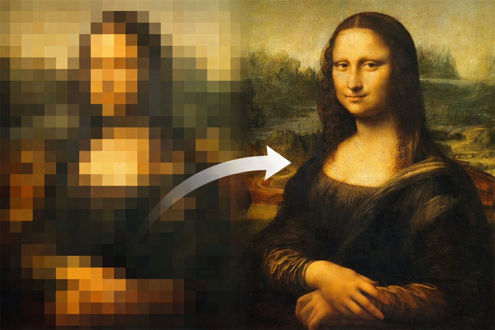
What the chips do
A QAM-64 transmitter hands its samples to the converter at 60 MHz, and the converter repeats the spectrum at every multiple of 60 MHz. Interpolating digitally by 2, 3, 4 or 5 before the converter moves those images away and makes the analogue filter simple. The cost is the arithmetic of the interpolation filter, and that arithmetic is the subject of the work.
Two chips
Both carry three interpolators, a polyphase FIR, a cubic and a MinAJ2 Hermite spline, behind one control unit and one cleanup filter, with seven run-time modes: three word lengths and four interpolation factors, up to 960 MHz. Chip 1 loads every filter coefficient over a serial bus. Chip 2 has every coefficient hardwired as shift-add arithmetic, so no multiplier remains in the polyphase and cleanup datapaths.
Result
The hardwired chip has a 40 % smaller polyphase core, 41 to 60 % lower core power at the same EVM, and is 20 % smaller overall. The polyphase FIR is the best of the three methods on both chips. EVM is read on a Keysight 89600 vector signal analyser; power comes from Voltus on the sign-off database with the switching activity of the bit-exact simulation.
Method
One golden fixed-point model in MATLAB writes the expected output of every mode. Every representation of the design, RTL, gate netlist, pad-wrapped netlist and routed netlist with SDF, is simulated on the same stimulus and compared word for word. Sign-off: Calibre DRC, LVS and ERC; Conformal equivalence, RTL-to-gate and gate-to-gate; PrimeTime three-corner timing; Voltus IR drop; bond pads and dummy fill in Virtuoso.
| Core power at L = 4, mW | Chip 1, loadable | Chip 2, hardwired | Saving |
|---|---|---|---|
| Polyphase FIR | 16.59 | 9.76 | 41 % |
| Cubic + cleanup | 30.73 | 13.99 | 54 % |
| Spline + cleanup | 30.88 | 13.47 | 56 % |
| Whole core area, µm² | 297 808 | 236 793 | 20 % |
The flow
From the golden model to the final GDS
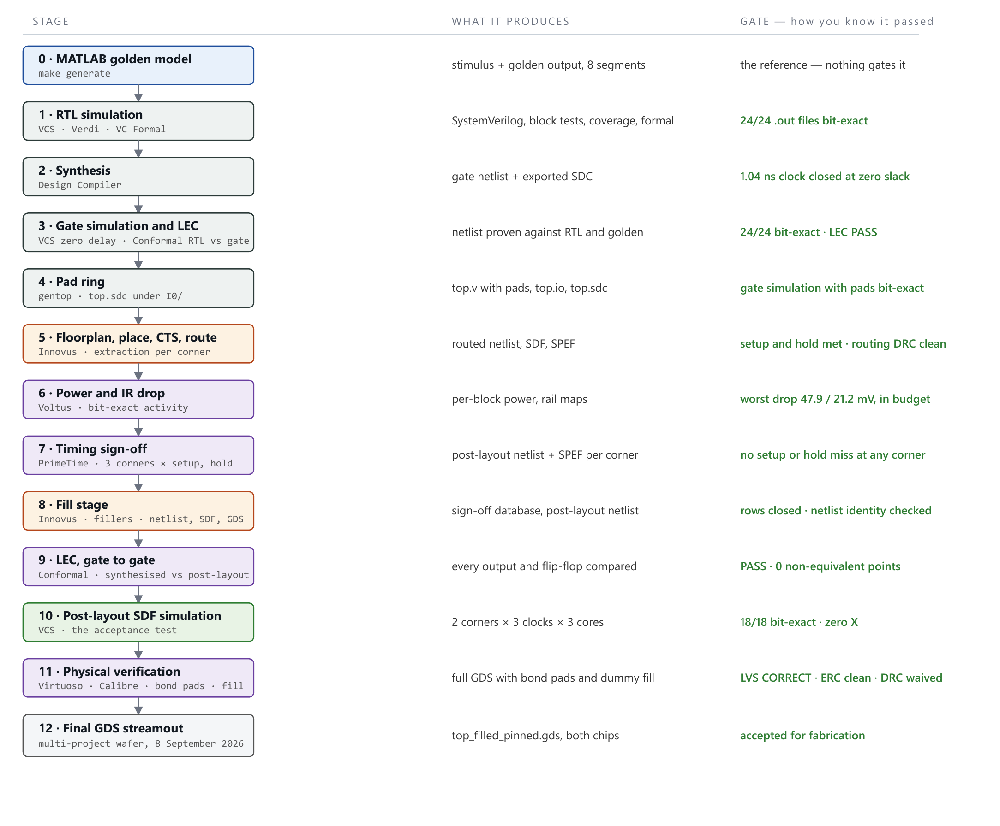
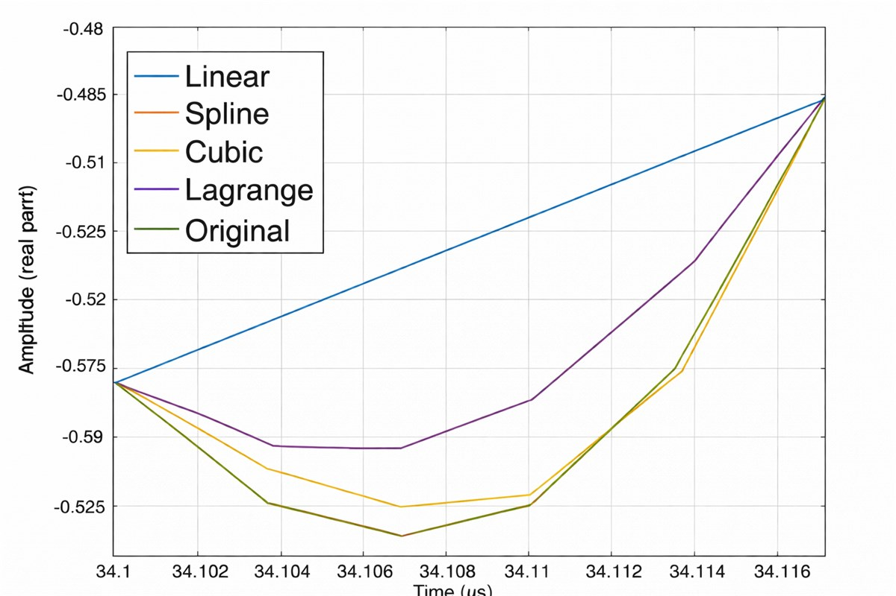
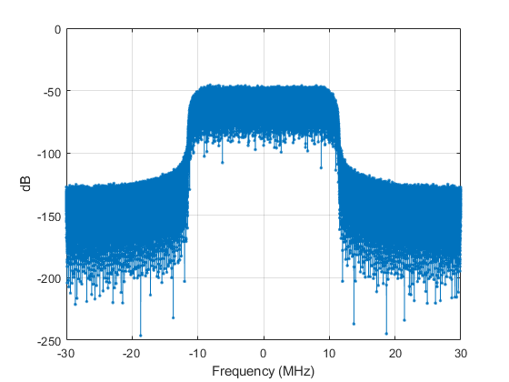
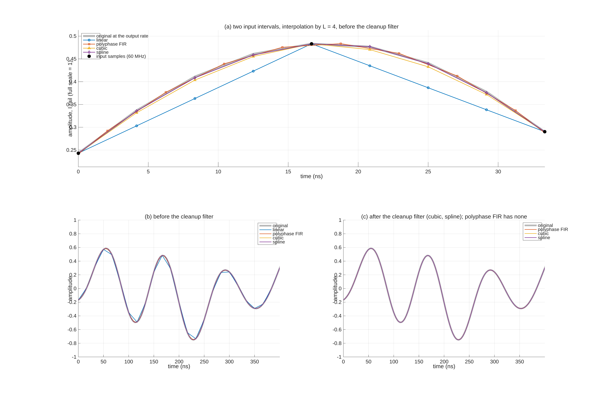
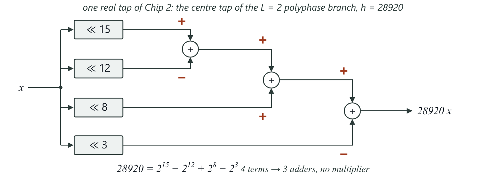
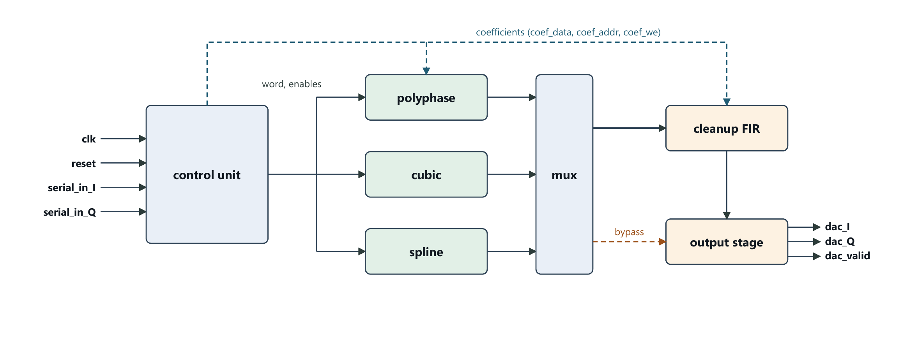
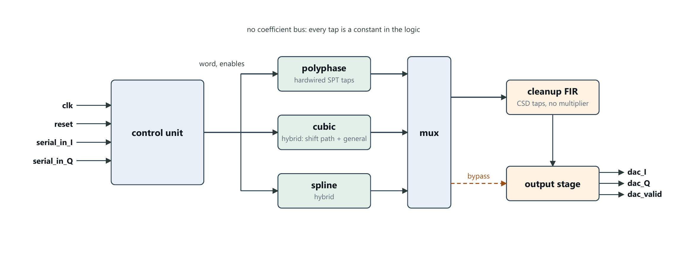
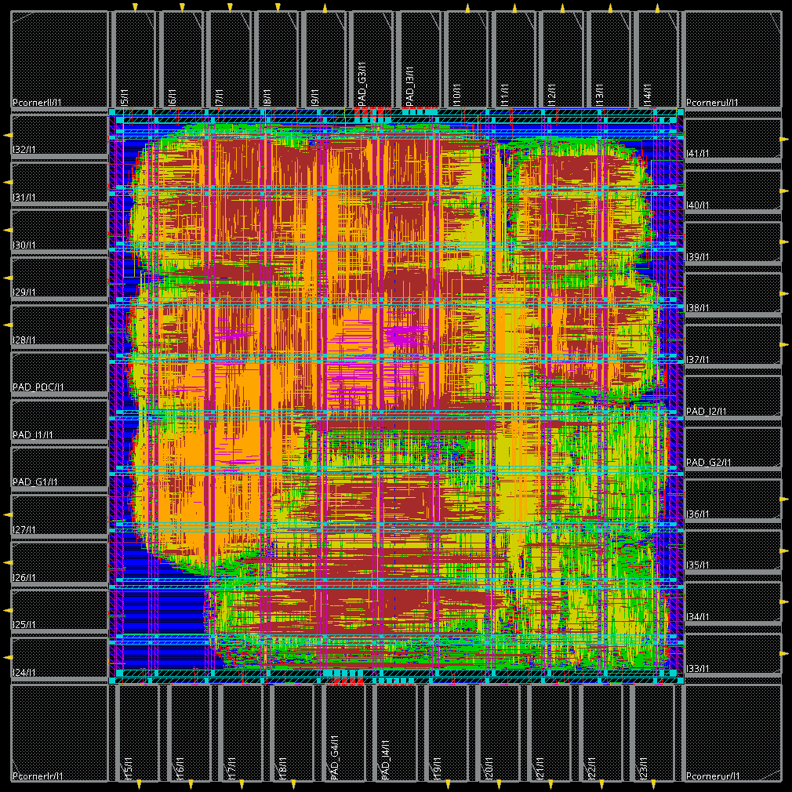
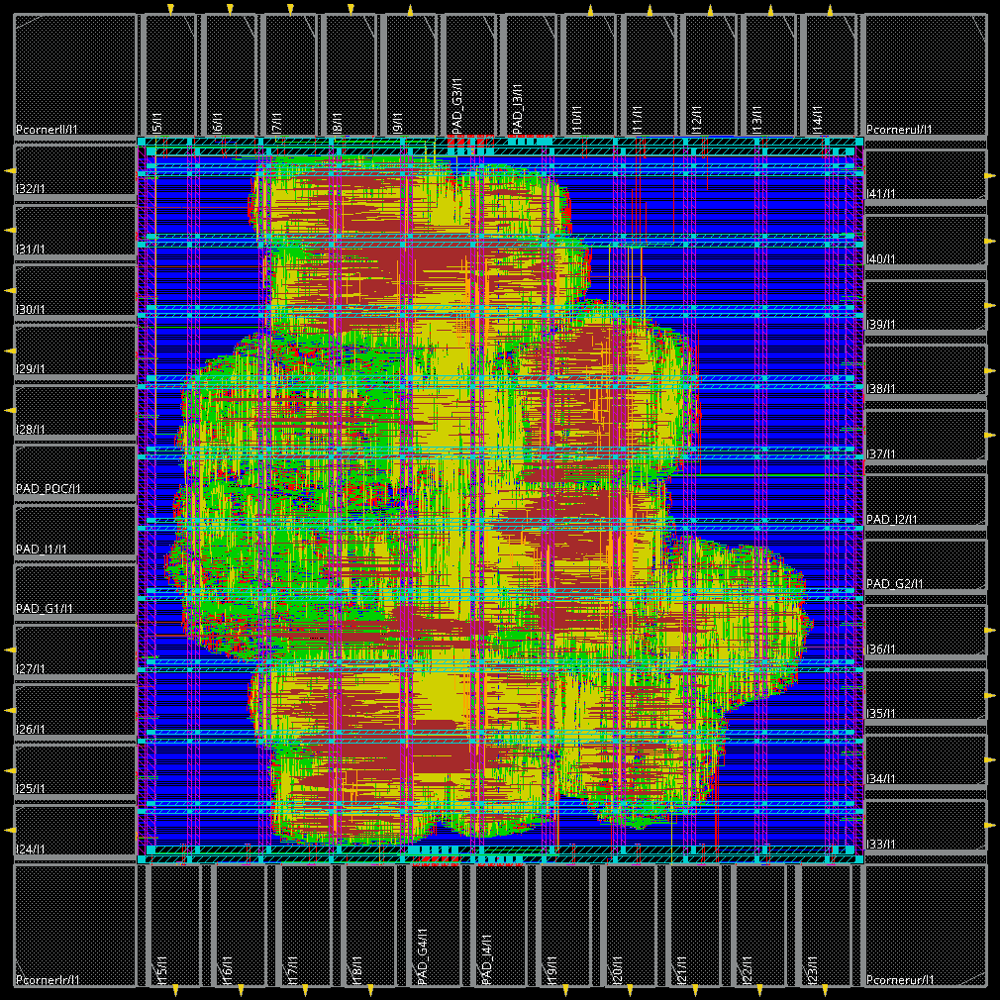
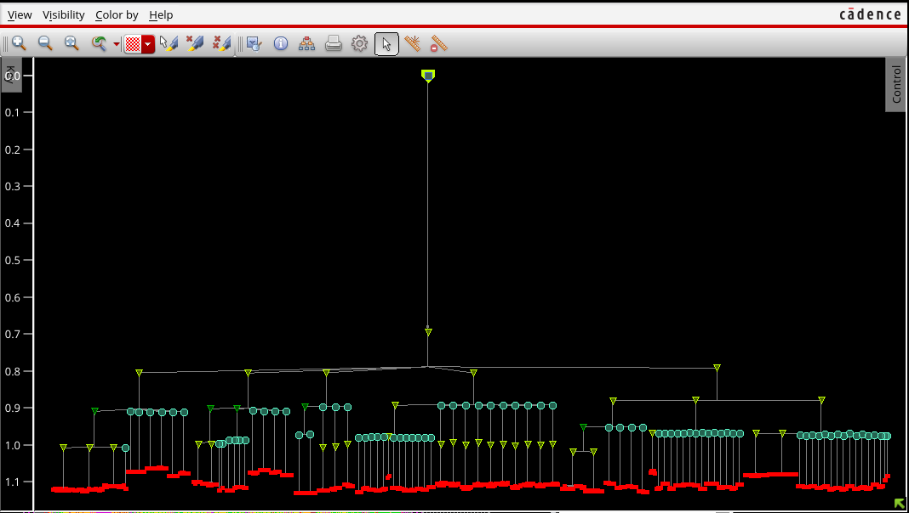
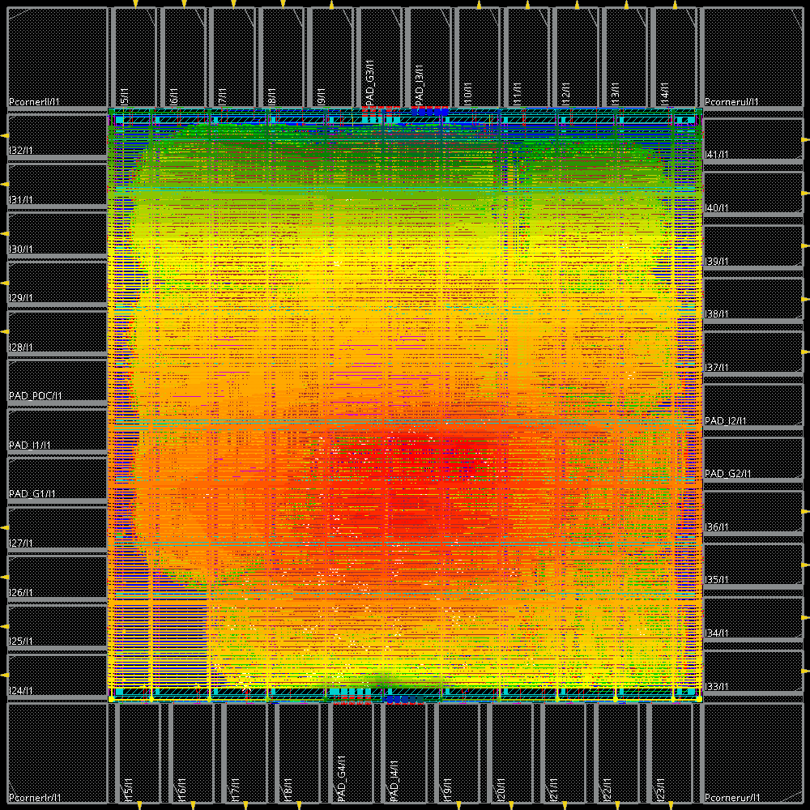
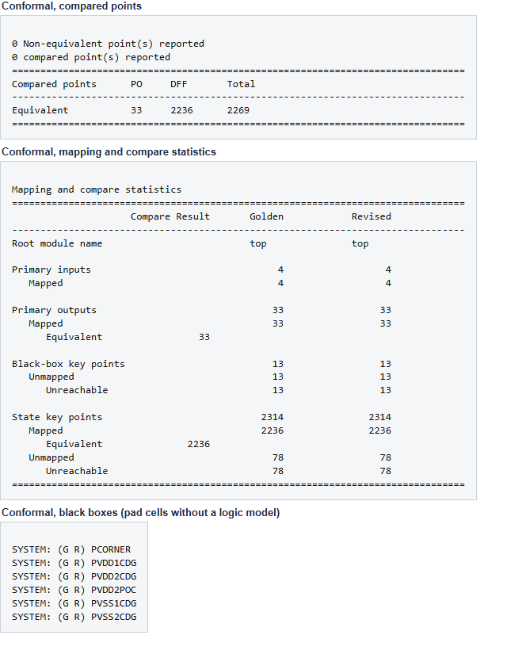
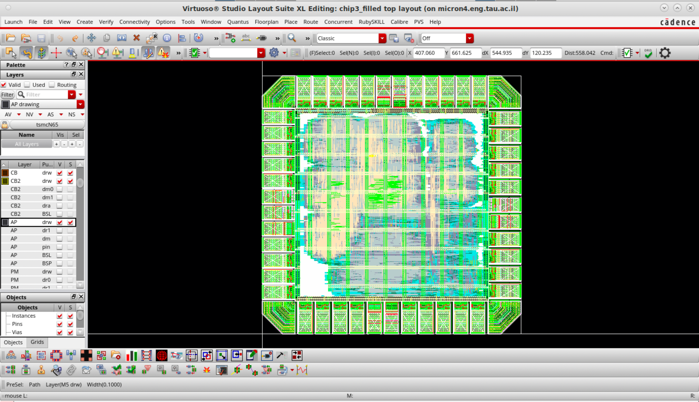
Signal analysis
The interpolated QAM-64 waveform on the analyser
The output stream is loaded into a Keysight 89600 vector signal analyser and demodulated. EVM measures how far each received symbol lands from its ideal constellation point; the replica level is how far the strongest remaining image sits below the signal. Both are read from the instrument, never computed.
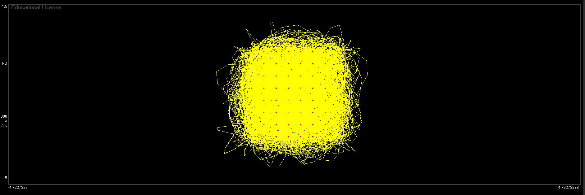
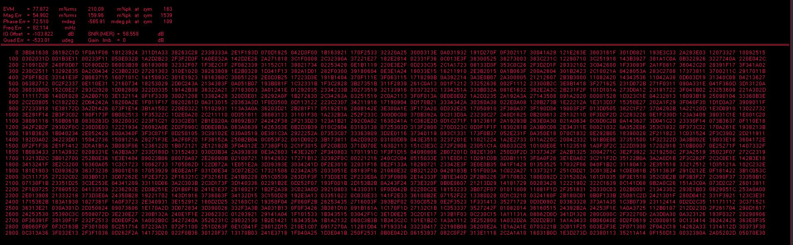
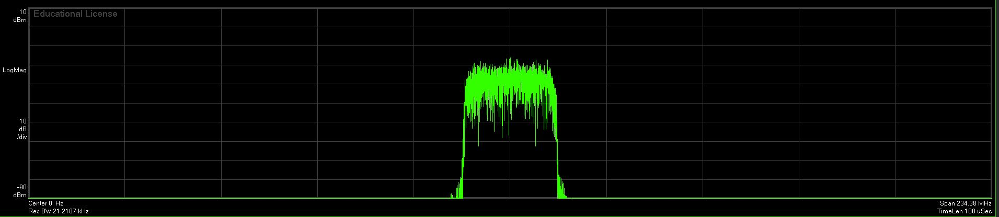
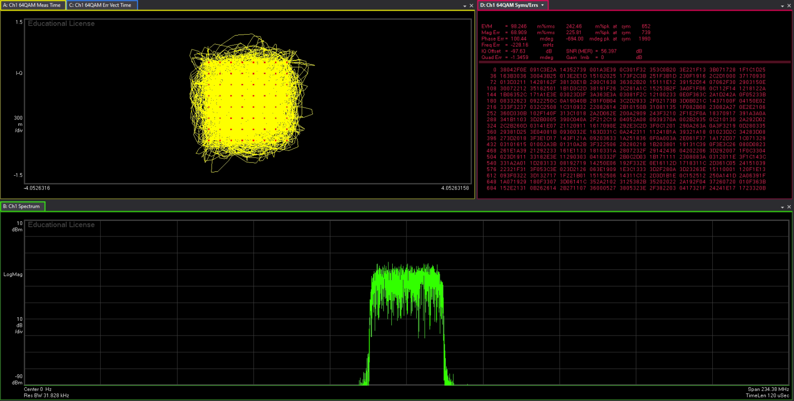
The analyser pictures are from an earlier iteration of the same interpolator arithmetic; the chip results in the thesis come from the final designs.